| |
.
Florida 2025
Universal Orlando Resort Fun Spt Busch Gardens Tampa Sea World Orlando Walt Disney World Resort
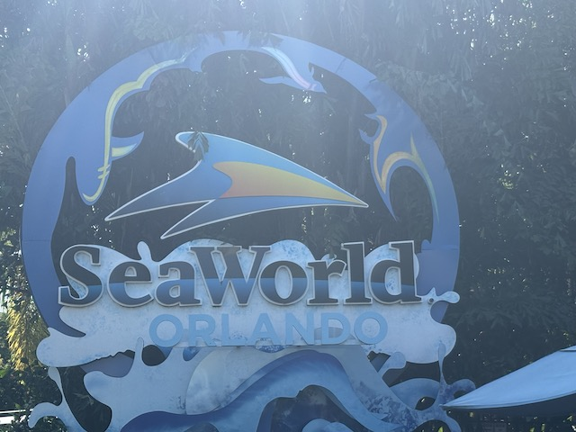
All right. Time for the one major park in Orlando that I failed to hit in 2007 (not counting Epic Universe since it didn't exist at the time). Yep. Time to finally hit up Sea World Orlando.
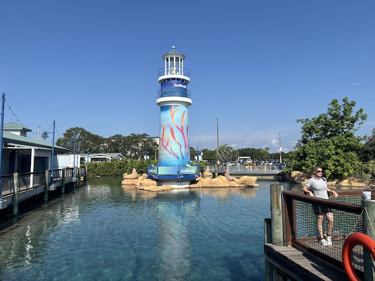
After countless visits to Sea World San Diego, and visiting Sea World San Antonio in 2013 (the fact that that trip was 12 years ago feels fundamentally wrong), and today, I get to finally check Orlando off my list (also was one of the few major parks in America I still hadn't visited).
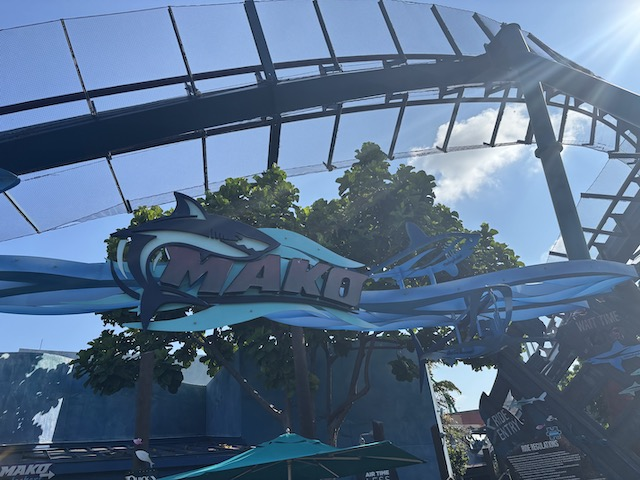
First coaster of the day.
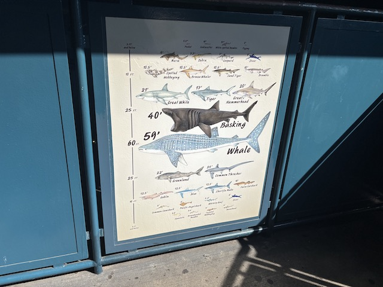
Some cool shark facts being shown in the line for Mako.
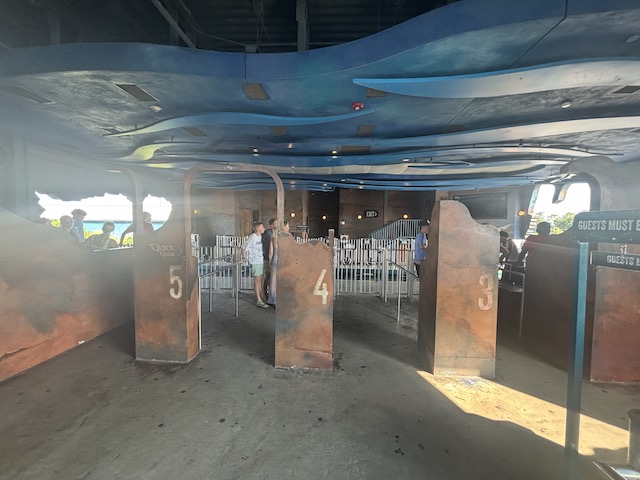
I have a feeling today is gonna be a really good day in regards to crowds here. =)
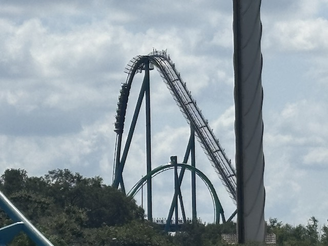
So Mako is widely regarded as one of the best B&M Hypers, and.....yeah. I have to agree with that.
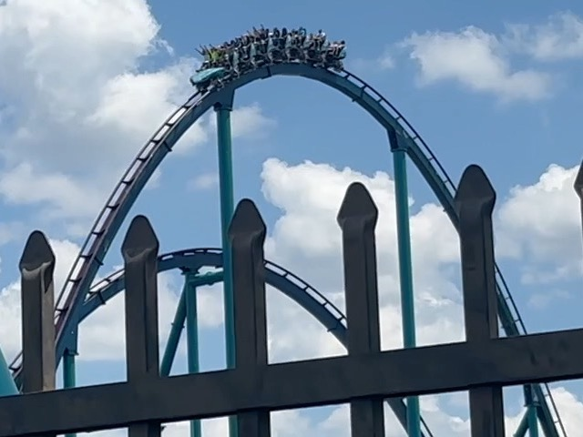
This thing is just a TOTAL BUFFET for REALLY STRONG floater air!
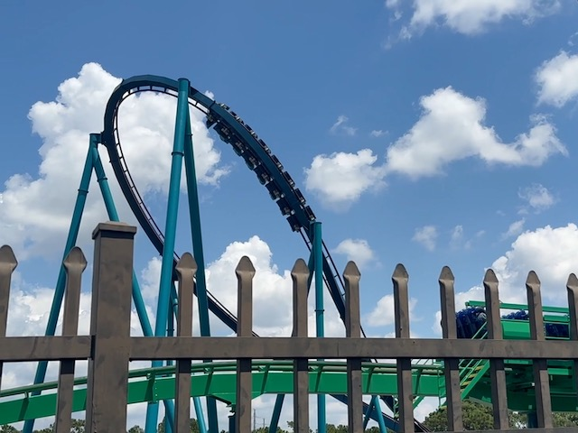
And yeah. That turnaround has some really nice laterals and keeps the speed going!
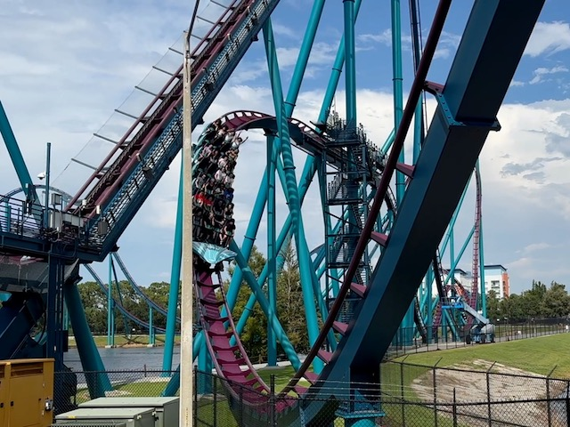
And of course, the ending is REALLY strong with some super strong laterals.
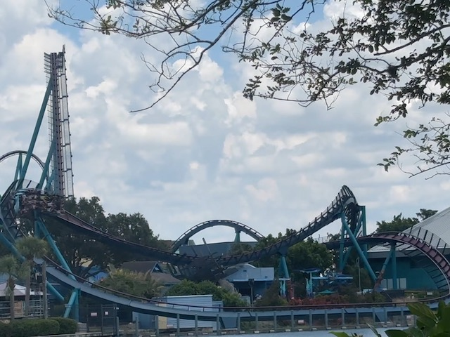
Seriously, there are long sustained laterals here. And I LOVE it. Honestly, most underrated part of Mako would be right here.
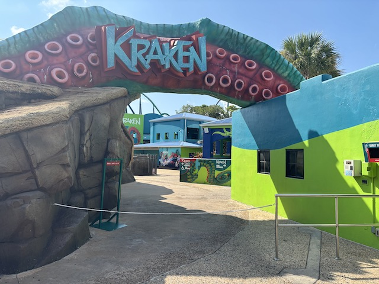
Aww damn it! Kraken is currently closed! =(
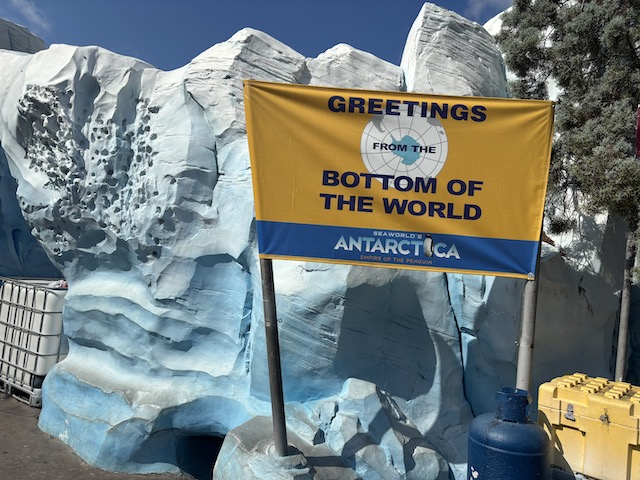
Uh oh. I think we got lost as we seem to have wound up at the bottom of the world.
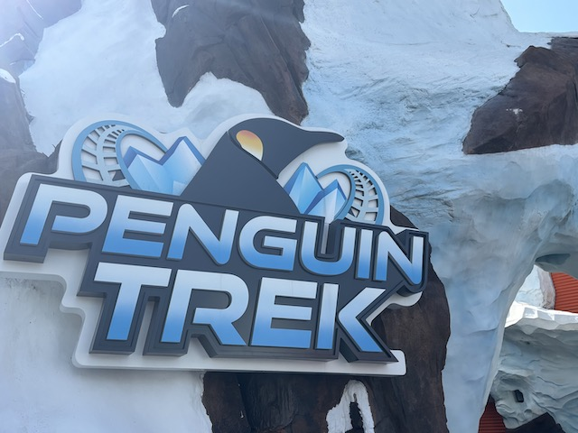
Oh boy! Time to hit up Sea World Orlando's newest coaster. Penguin Trek.
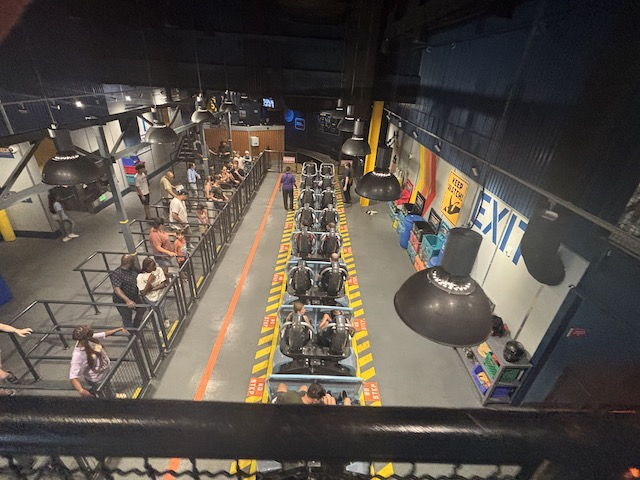
Yeah. This is another interesting coaster as its currently the only family sit down B&M.
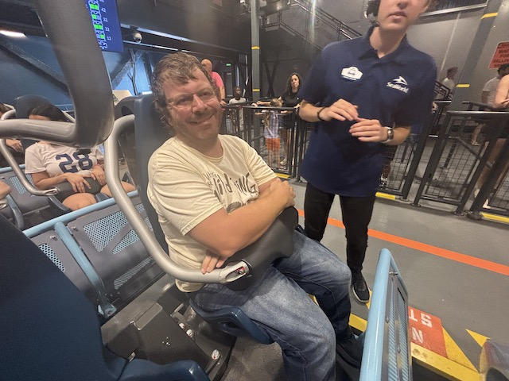
Jason rides another B&M.
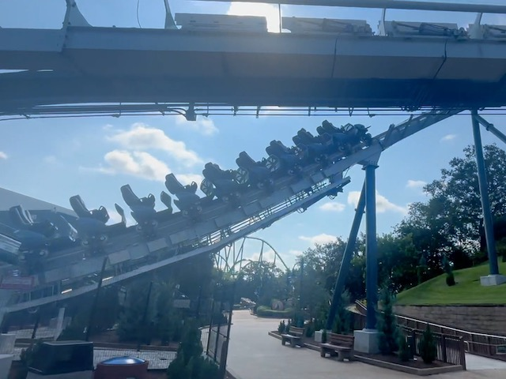
So one cool thing is that Penguin Trek is another launched B&M, with a launched lifthill. Nice little addition to the ride.
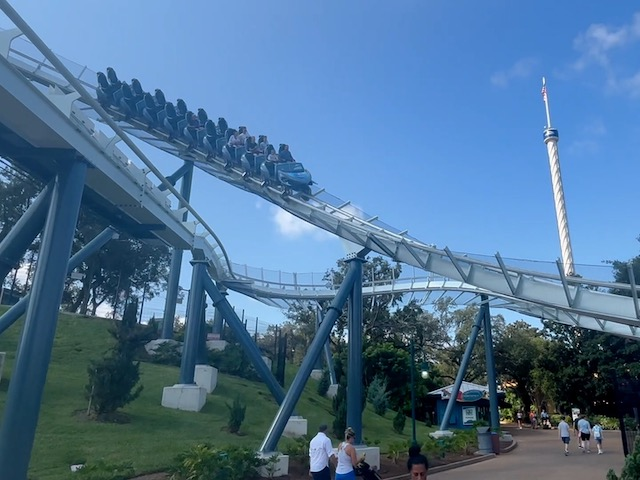
So one thing I've been hearing from A LOT of enthusiasts is that Penguin Trek, and nearly ALL the new B&Ms built these past few years have been EXTREMELY rough. Now I can't speak for the adult B&Ms that have been getting rattle complaints as I haven't ridden any of those (Iron Menace, Wrath of Rakshasa, Tormenta, etc.) and officially comment on any of those. But Penguin Trek? I had NO problems with it. I didn't notice ANY sort of rattle at all. And it's not just me. Jason, who is FAR more sensitive to roughness, also never complained about a rattle or it feeling off in any way. So......I have no idea where these roughness and rattle complaints came from on Penguin Trek. Also, I know it doesn't get rattle complaints, but Pipeline here, is a new B&M, and I had no problems with that (more on Pipeline down below). I'm not sure if we were just lucky, or if other enthusiasts are just weaker than I am (I'd just come to that conclusion, if it wasn't for the fact that Jason also never felt a rattle).
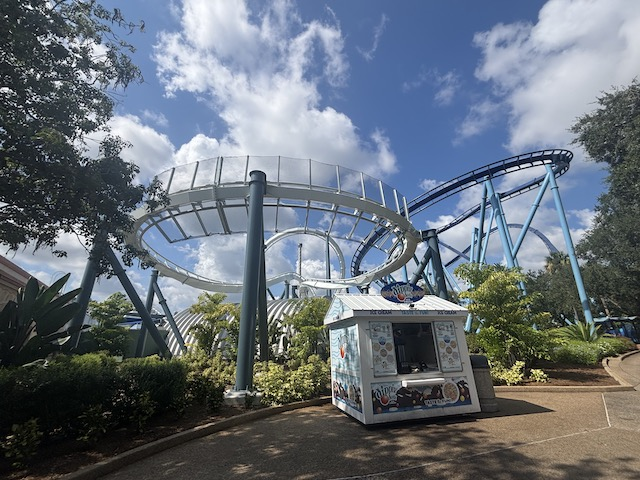
Debunking roughness complaints aside, Penguin Trek is a fine family coaster.
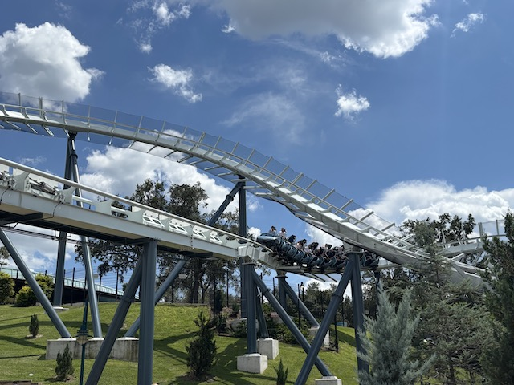
Yeah. It may be far from the best ride ever, or even the best family coaster ever (Florida is honestly the king for stand out family coasters). But I still had fun on it and would recommend Penguin Trek to young coaster enthusiasts and those with a low coaster tolerance.
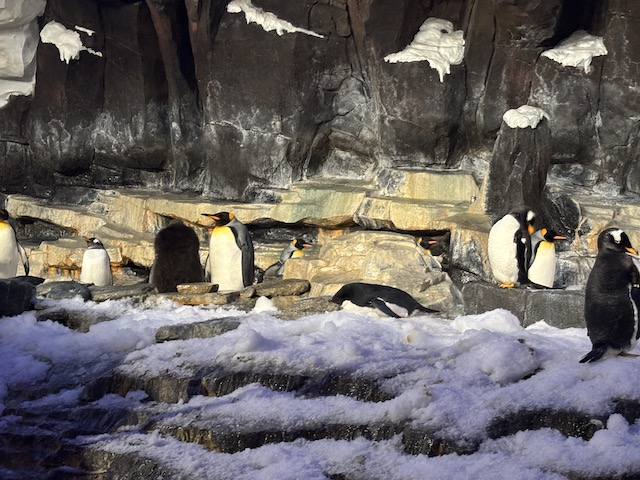
And just like with how you can still see the Arctic exhibition after riding Arctic Rescue @ SWSD (BTW, Arctic Rescue > Penguin Trek), it's the same thing with the penguin exhibition and Penguin Trek.
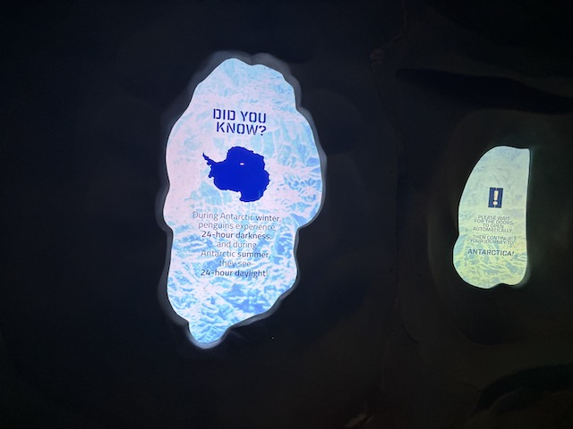
Here's some cool random penguin facts.
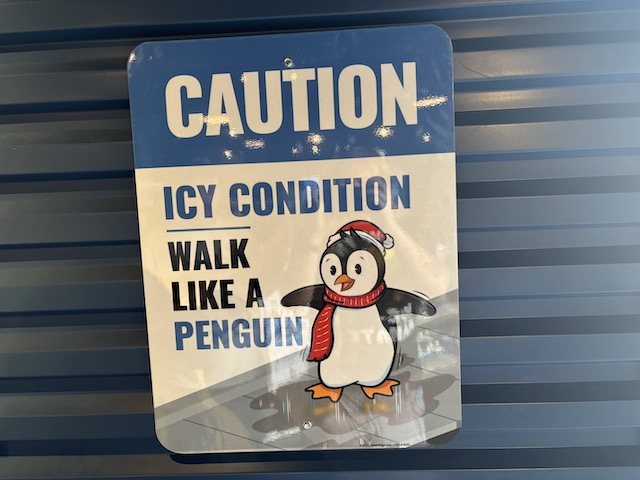
We're bored and would get a kick out of seeing all you people waddle like penguins. Please don't let us down.
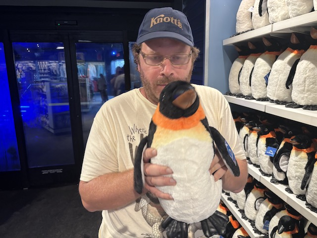
Can I adopt him please? I promise to feed him, clean up after him, waddle him, and guard him from Chandu! Pretty please?
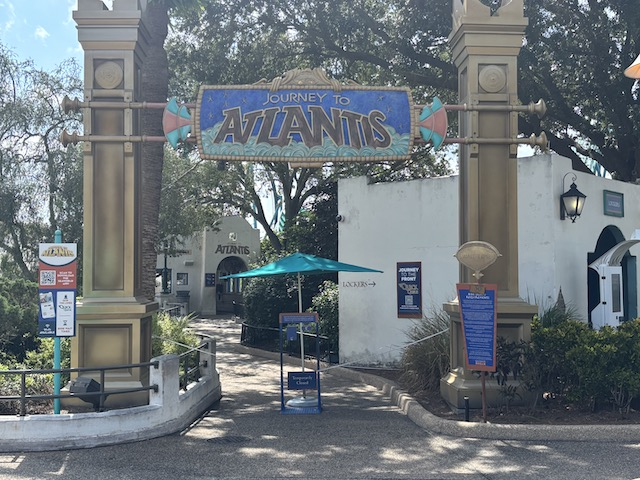
Damn it! Journey to Atlantis is ALSO closed right now!
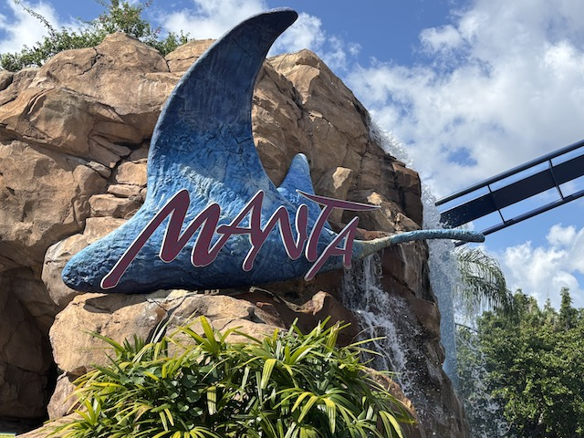
All right. Moving on with the adult coasters, we now have Manta.
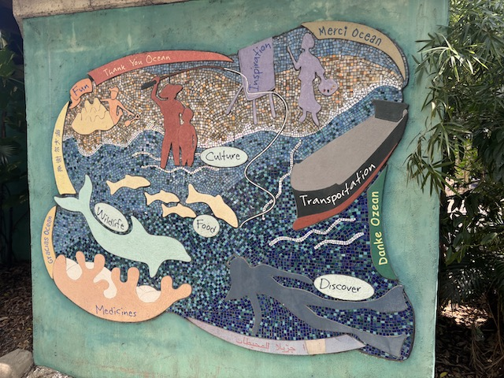
Ooh! Nice pool tile art you've got there!
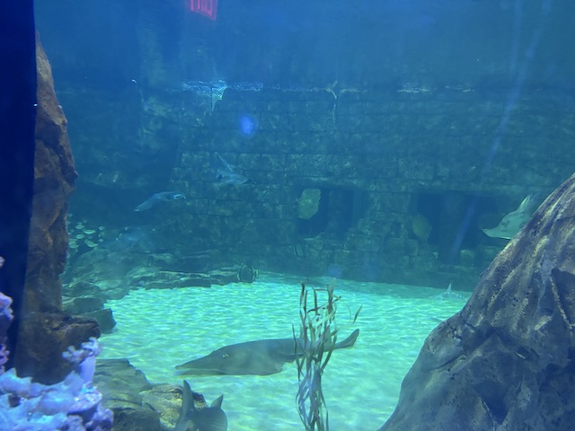
And just like San Diego Manta, Florida Manta ALSO has an aquarium in its line. Glad to see they do that here as well. =)
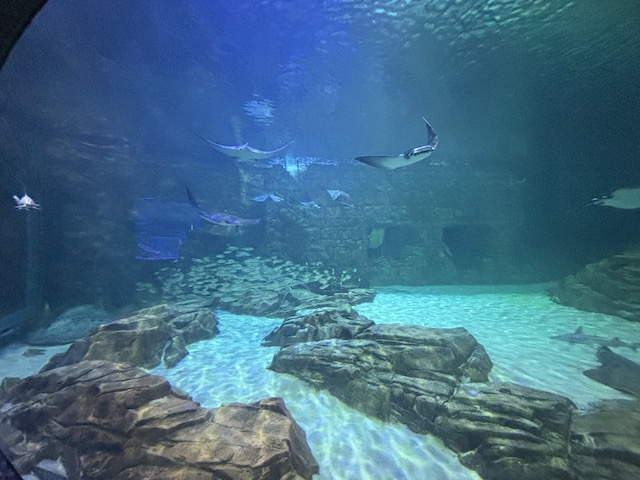
Hello Mr. Manta Ray! We're about to ride your Floridian coaster!
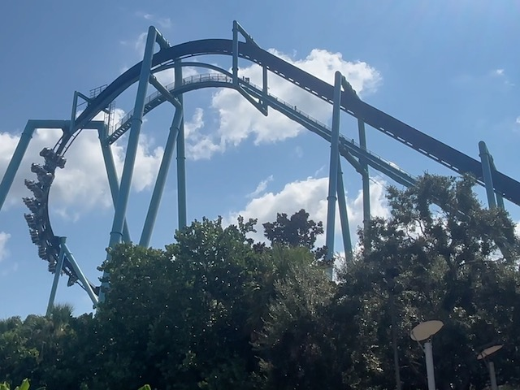
Fun fact. I actually rode the Japanese clone @ Nagashima Spaland 7 years before finally riding the popular American version!
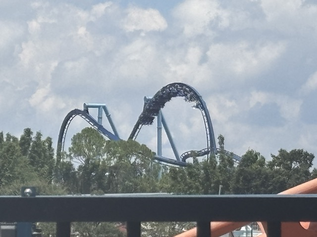
Yeah. It's much better with the theming as Manta than it is naked as Acrobat.
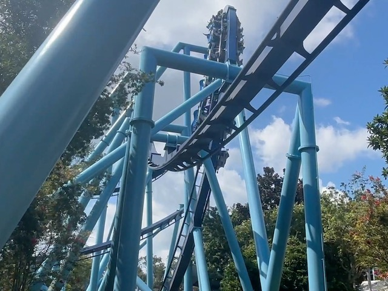
Honestly, I have to revise what I said 7 years ago when comparing Acrobat vs Tatsu. Back then, I argued that Manta (Acrobat) was the better overall ride. I take that back. Tatsu not only has the AMAZING Pretzal Loop, but also those really high above the ground inversions. But yeah. Still a moot point since Flying Dinosaur kicks the ass of both.
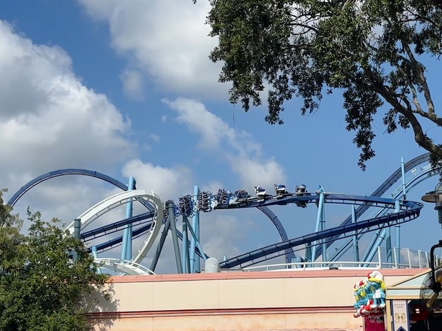
Regardless, this is still a really fun B&M Flyer.
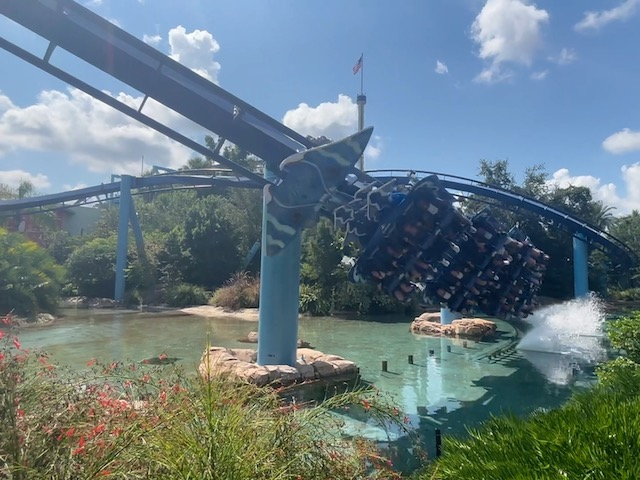
Yeah. The water splash here actually looks natural. This genuinely is a gorgeous ride.
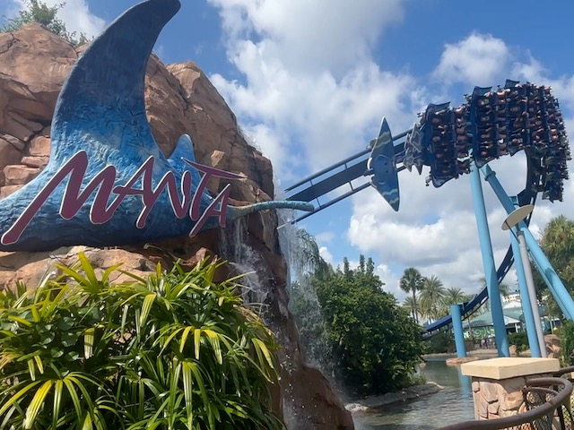
I really love this shot.
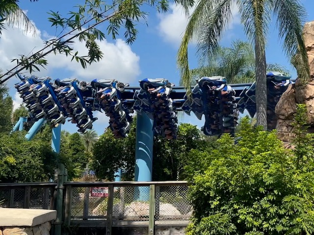
Hey! I may be inferior to Flying Dinosaur, and even Tatsu. But hey! I still beat the Superman: Ultimate Flight clones!
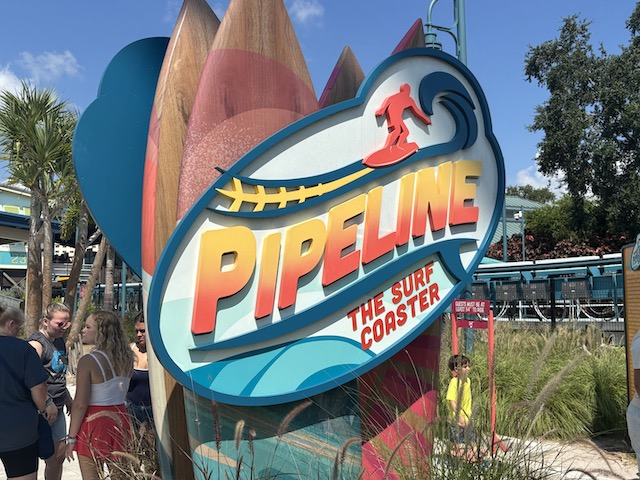
Moving on, the next coaster is the newest adult coaster here, Pipeline.
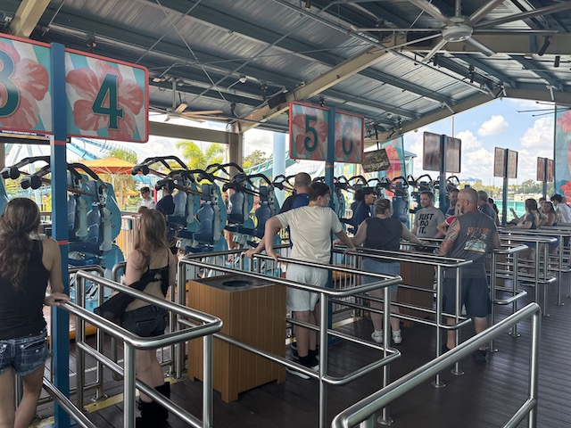
Tell me. Is Sea World Orlando crowded today?
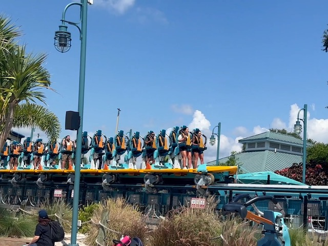
OK. So Pipeline is an example of B&Ms newest model. The Surf Coaster. This is basically their modern take on a stand up coaster. Only with seats that move up and down.
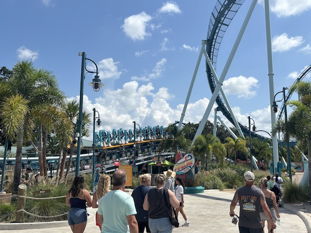
Pipeline acting as another example that B&Ms now just have launches. Kind of weird since I'm so used to B&Ms not doing that, but hey. This is a fun launch and works for the ride.
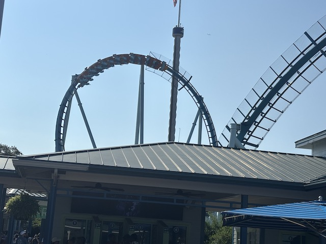
Nothing too exciting about this turnaround. But hey! We're having fun.
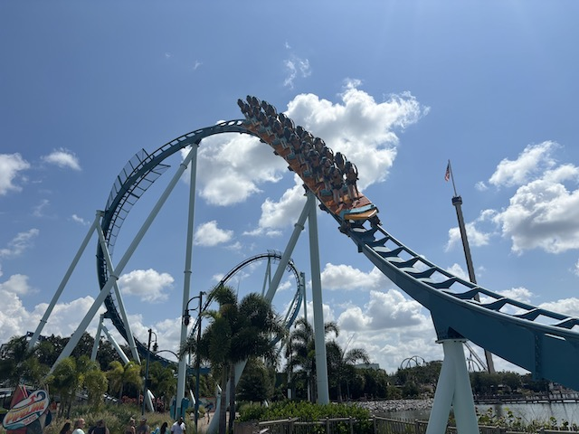
So basically, one of the main features of the B&M Surf Coaster is that the seats move up and down, leading to the REALLY cool phenomenon of artifical airtime. LOVE this aspect and makes so many parts of the ride better when they'd otherwise be meh. =)
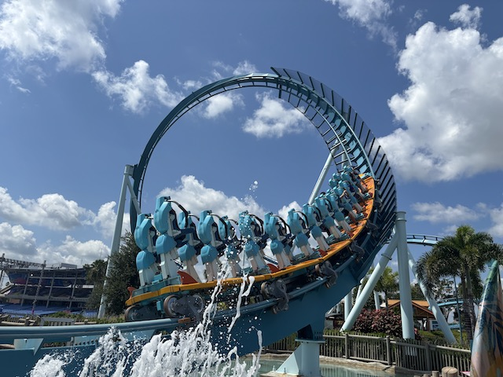
Love this shot with the water.
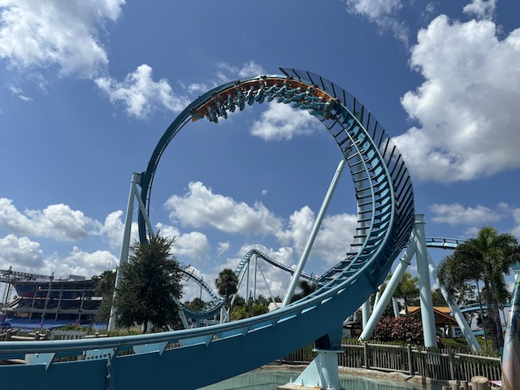
Another main thing about Pipeline is all the floaty inversions in the first half. It'd be better if they were faster and had more whip. But hey. Floaty inversions are fun too.
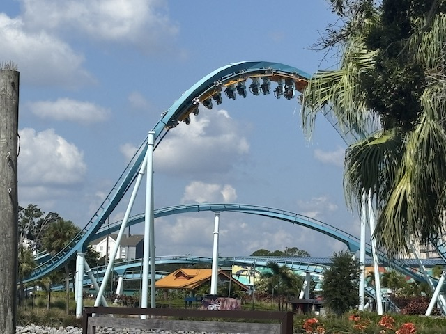
The ride concludes with a relatively meh ending, made really fun thanks to those artifical pops of airtime.
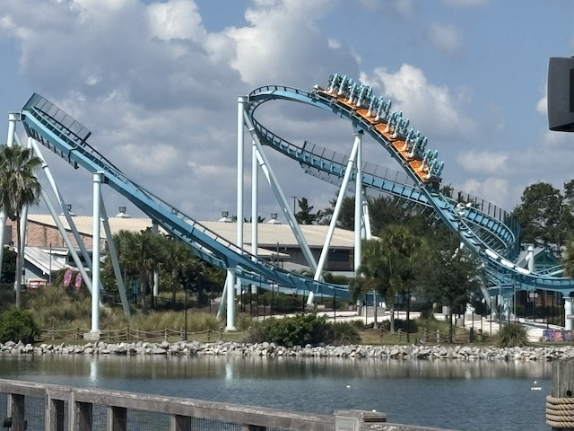
So yeah. I was a big fan of Pipeline. It ranked right up there with the best B&M stand ups (Riddlers Revenge and Georgia Scorcher), and I'm really happy to hear B&M is building a 2nd Surf Coaster in China.
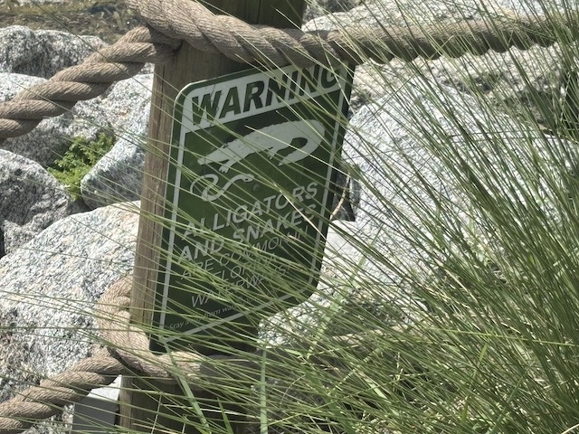
Sorry gators. But you've been blacklisted from SeaWorld and don't get the treatment! Go back to Gatorland!
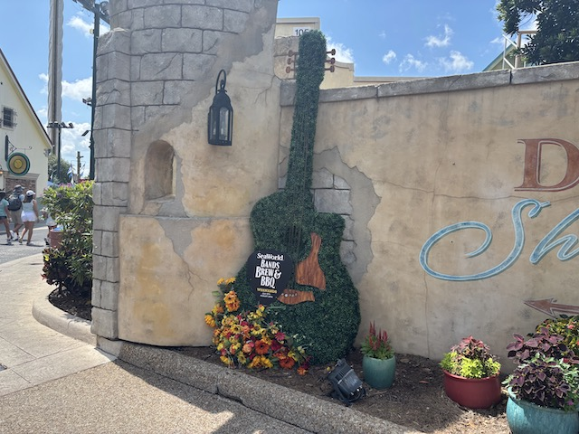
Hmm. There's something off about this guitar. But I can't seem to put my finger on it.
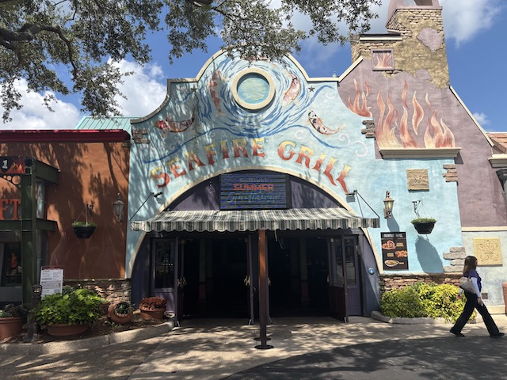
All right. Time for lunch.
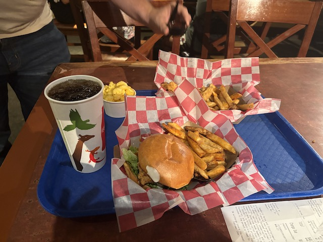
Meh. Nothing special about this chicken sandwich. But.....it was adequate.
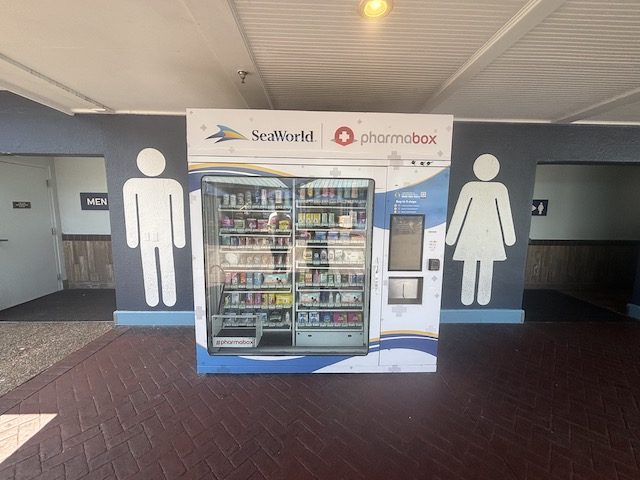
Ordinarily, I'd say that they're price gouging you here, except.....you're getting price gouged just as hard at a normal pharmacy. So.....you're just f*cked.
You know, this is a Sea World park. I think it's time we explored some animals.
Not much really going on here. Just a small nursery to hang out with some of the dolphins.
"Hey you! Yes you! You got my fish, boy!?"
"Hey asshole! I never consented to you filming me! Take that!" *splash*
Honest to god, this dolphin painting looks nicer than a LARGE number of famous paintings that only are famous and expensive because other rich snobs decided so.
Hello lake in the middle of Sea World Orlando.
For those of you looking to find Shamu in Sea World Orlando, here you go.
Oh wait! I haven't done Ice Breaker yet! Gotta hit that up!
F*CK!!! Why is THIS the one coaster at the park to actually have a line!? Grr. Not happy about that. >=(
So Ice Breaker is a VERY interesting ride that honestly, really exceeded my expectations.
It starts with a swing launch and a back spike that's pretty cool.
Gotta then make sure you get up the top hat.
Nice pop of ejector air right here.
The rest of the ride may look like a family coaster, but this shockingly is much faster, snappier, and actually has stronger airtime than you'd expect. One of the most pleasant surprises of this trip. Surprisng thumbs up for Ice Breaker. =)
Hey! I found the East Coast version of the wooden whale!
I'm sorry for all the parents stuck there hearing that god-forsaken abomination of a song for the googolth time.
Yeah. Had to check back on Kraken, which has luckily opened on up.
*Sigh* That's much better after having to actually wait for Ice Breaker.
This was the one coaster that existed during my last Florida visit, but I never got to ride (I did get to see it driving past Sea World in 2007). So this is something I'm REALLY happy to finally be riding.
Yeah. This is a REALLY STRONG B&M Floorless coaster.
It's REALLY fast, and has a TON of whip in all of the inversions. A nice old school classic Floridian B&M and one that REALLY blends in with the others like Hulk, Montu, and Kumba (R.I.P most likely) with there being so much whip and snapiness on the ride.
After a first half of a standard, but VERY FORCEFUL B&M, the 2nd half is......not quite as crazy, but still pretty fun and unique.
It's REALLY hard to choose whether this or Dominator @ Kings Dominion is the best floorless (For now, Dominator wins by a hair, but there's a really strong argument for both).
And of course, there's also a nice bit of whip at the very end with the corkscrew.
Speaking of opened back up, Journey to Atlantis is also reopened! And this one counts as a credit!
Yeah. This is the best of the 3 Journey to Atlantis', with the best theming. But honestly, that's a low bar.
Very pretty tiny little waterfall. =)
I know I still have one credit left, but this is a higher priority than the kiddy credit.
*Sigh* Unfortunately, I did NOT get on Infinity Falls this trip. Not because I didn't try, but rather......I was in line for it. Just a couple boats away from boarding when......BAM!!!! The entire park shuts down due to lightning in the area. Grr! Not again! Getting flashbacks to this happening on Dudly Do Rights @ IOA a couple days ago. Except we got on that, whereas this never reopened up. It's a real shame because this looks like a GREAT rapids ride. *Sigh* Next time in Florida. =(
Ugh. Have to find another fun activity before this rainstorm passes.
Might as well take this to relax in the cafe and get my phone charged somewhat.
Love the models they have of various different SWO coasters in the coffee shop.
These are a really nice touch that add a nice bit of life to the shop. =)
*gasp* There's a brief window and some rides are opening up! Get back on Mako for another reride!
This ride is REALLY good. 2nd favorite B&M Hyper, just behind Goliath @ SFOG (And I can reaffirm this as I rerode it recently).
Crap! Everythings closed for lightning again! Gotta find something else to do!
Just a quick reminder that life is NOT Jaws and you're far more likely to die via a car accident than by a shark swimming in the ocean.
Hmm. I think I know what else we can do that's fun and still open in the thunderstorm.
We swam with the dinosaurs! Aren't we a badass species! =)
Luckily for us, whale sharks are friendly towards humans.
How's it going!? I'm a lionfish!
"Hey assholes! I'm not a replacement for an actual saw! Go stop at Home Depot or some other hardware store you cheap bastards!"
Hmm. To attack the Incrediblecoasters people or not?
You have been spared by the free fish buffet behind me. >=)
Obviously, I support shark fin soup bans. Not only is shark finning cruel, but apparently the shark fin doesn't even taste like anything, and is only there for texture, making this both cruel as well as offensively pointless. Though I do want to try a cruelty-free vegan Shark Fun Soup, both to satisfy my morbid curiosity without contributing to a harmful practice, trying an ethical naughty food.
Ooh! Must buy expensive shiny rock created by clam!
God damn it! This thunderstorm is still going strong and not letting up anytime soon! >=(
Yeah. The entire park closed 2 hours early since......it was crystal clear that NOTHING was gonna open before the park closed. Ugh. This sucks.
No problem. I had a blast here today. And thank you for all the great work you do in animal conservation.
Our original plan was to go to some cuban resteraunt in Tampa after BGT, but had to rush back to the hotel and that was cancelled. So instead of doing Waffle House tonight (we did that yesterday), we decided to check out this cuban (and more broadly Latin American) resteraunt in Orlando.
Had to try a Frescolita, which is apparently a very popular soda in Venezuela (sorry we invaded you and did a coup against you. We REALLY suck). It's basically a Red Cream soda, which has a sort of fruity bubblegum taste to it. Two thumbs up.
As for the food itself, I tried the Columbian Burger, which.....was definately interesting. It was a combination of a beef and pork patty, and had a sort of almost fruity tropical twist on a standard burger and DEFINATELY felt different. It was good, though I do prefer normal burgers (but hey. I'm happy I tried something different).
And they even were nice enough to not only take our picture, but also gave it to us on a postcard as a memento, which I still have on my desk. Aww. Thanks. I really enjoyed your resteraunt. =)
Hello heron hanging out in the trees adjacent to the parking lot.
Running some errands after dinner, and GOD DAMN IT!!!! IT'S STILL POURING!!!
Walt Disney World Resort
Home
|